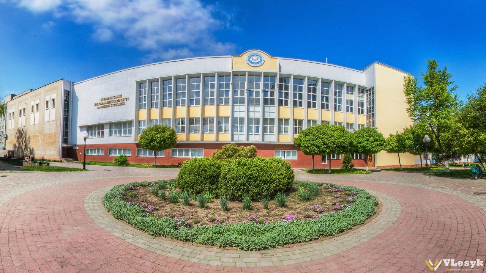

{% extends "base.html" %}

{% block title %}About{% endblock %}

{% block content %}


<div style="padding-left:20%; padding-top:1%;">


    <div  style="display:inline-block; width:20%; vertical-align: middle; ">
        <h4>I was born on July 5, 2002 in Ivano-Francivsk city, Ukraine.</h4>
    </div>
    <div style="  display:inline-block;">
        
    </div>


</div>


<div style="padding-left:10%; padding-top:1%;">

    <div style="display:inline-block; ">
        
         <div  style="display:inline-block; width:30%;padding-left:10%; vertical-align: middle;">
            <h3>I am currently studying at Prykarpattia National University named after Vasyl Stefanyk as a software engineer.</h3>
         </div>
    </div>


</div>

<div style="padding-left:30%; padding-top:1%;">
    <div  style="display:inline-block; width:20%; ">
        <h3>I program in Python, Java, C++.</h3>
    </div>
    <div style="display:inline-block; padding-left:10%;">
        
    </div>

</div>


{% endblock %}

